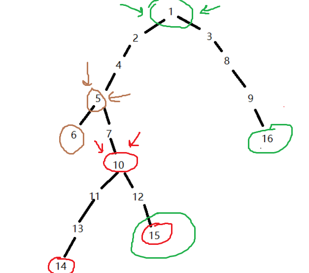
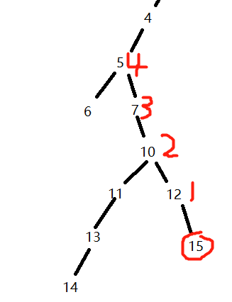
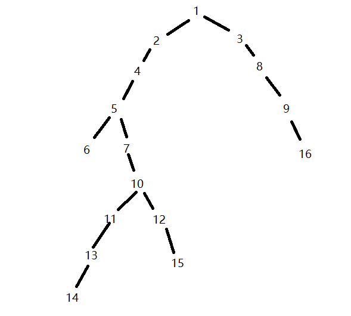
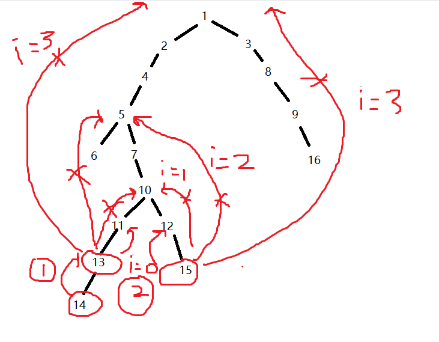

原文连接:https://www.cnblogs.com/Remilia-Scarlet/p/10763636.html
对于有根树T的两个结点u、v，最近公共祖先x=LCA(u,v)表示一个结点x，满足x是u、v的祖先且x的深度尽可能大。

如图，根据定义可以看出14和15的最近公共祖先是10, 15和16的最近公共祖先是1, 6和5的最近公共祖先是5......
假如我要求14和16的最近公共祖先，要怎么做呢？
最暴力的做法，就是先看14和16在不在同一层，如果他们不在同一层，那么较深的那个点往上爬（即距离根较远的那个点）
一直爬，爬到两点的深度一样
当两点深度一样时，判断他们是否在同一个点上，如果不是，则两个点同时往上爬，直到这两个点是同一个点
显然，这么做一般来说都是不行的。
下面介绍倍增法（图是用vector存的）
既然一步一步往上爬太慢了，那就一次爬远一点
我们预处理一个数组fa【x】【i】使游标快速移动，大幅度减少跳转次数。
fa【x】【i】表示 点x的第2^i个祖先
拿上图来说，fa【15】【0】就是点15的第2^0个祖先，即12（fa【15】【0】=12）
fa【15】【1】就是点15的第2^1个祖先，即10（fa【15】【1】=10）
fa【15】【2】就是点15的第2^2个祖先，即5（fa【15】【2】=5）

怎么预处理出这个数组呢？我们观察上图，15的第一个祖先是12，12的第一个祖先是10
即fa【15】【0】=12 fa【12】【0】=10
而15的第二个祖先是10，和12的第一个祖先是一样的
fa【15】【1】=10
也就是说，对于点15来说，15的第二个祖先就是15的第一个祖先的第一个祖先（点12的第一个祖先）
用数组表示是fa[15][1]=fa[ fa[15][0] ][ 0 ];
即fa[15][1]=fa[12][0]
推广到第2^i个祖先：递推式：fa[rt][i]=fa[fa[rt][i-1]][i-1];（rt为当前节点）
预处理代码：（depth数组存的是当前节点的深度）
void dfs(int f,int rt )//rt是当前节点，f是当前节点的父亲
{
depth[rt]=depth[f]+1;
fa[rt][0]=f;
for(int i=1;i<20;++i)//自己估计i的范围
fa[rt][i]=fa[fa[rt][i-1]][i-1];
for(int i=0;i<E[rt].size();++i)//用vector存的图，遍历当前节点的每一个孩子
dfs(rt,E[rt][i]);
}下一个问题是，游标移动到哪里合适？
我们的原则是，先让两个点的深度一致
然后，让两个点同时跳相同的步数
1.如果跳出根以外了，就不跳
2.如果跳到的点是相同的点，也不跳（不一定是最近的公共祖先）
不是以上两种情况，就跳
举个栗子，如图：

假如我们问14和15的lca是哪个点
按照规则
我们先让14和15在同一层上（深度一致）
14跳到了13
然后，我们看跳多少步合适，如果i=3，即2^3=8步，发现已经跳出根以外了，不跳
再看i=2, 2^2=4，13和15的第四个祖先都是5，不跳
再看i=1，即跳2步，发现都是10，不跳
再看i=0，跳一步，13跳一步到11,15跳一步到12，两个点不相同，可以跳
此时第一遍循环结束，判断这两个点的第一个祖先是不是同一个点
如果是，则找到了
如果不是，那就继续进行循环
用图表示：

第一步是14跳到13
第二步是13跳到11,15跳到12
发现11和12的第一个祖先都是10，找到答案，结束循环 （时间是log级别的）
代码：


int lca(int x,int y)//找x和y的最近公共祖先
{
if(depth[x]<depth[y])//调整x的深度大一些
swap(x,y);
while(depth[x]!=depth[y])//使x和y的深度一致
{
for(int i=9;i>=0;--i){//初始常数自己根据问题进行调整
if(depth[x]-(1<<i)>=depth[y])
x=fa[x][i];
}
}
if(x==y) return x;
while(fa[x][0]!=fa[y][0])//当x和y的第一位祖先都一样时退出循环
{
for(int i=9;i>=0;--i){
//如果没有出界而且两点的祖先不一样，就跳
if(fa[x][i]!=0&&fa[x][i]!=fa[y][i])
x=fa[x][i],y=fa[y][i];
}
}
return fa[x][0];
} 代码自己写的，有点丑，网上的没看懂....
下面给出测试代码和样例，大家可以去试一试，样例就是第一幅图
#include <iostream> #include <queue> #include <vector> #include <stdio.h> using namespace std; vector<int> E[20]; int depth[20]; int fa[20][20]; void dfs(int f,int rt ) { depth[rt]=depth[f]+1; fa[rt][0]=f; for(int i=1;i<20;++i) fa[rt][i]=fa[fa[rt][i-1]][i-1]; for(int i=0;i<E[rt].size();++i) dfs(rt,E[rt][i]); } int lca(int x,int y) { if(depth[x]<depth[y])//调整左边深 swap(x,y); while(depth[x]!=depth[y]) { for(int i=9;i>=0;--i){ if(depth[x]-(1<<i)>=depth[y]) x=fa[x][i]; } } if(x==y) return x; while(fa[x][0]!=fa[y][0]) { for(int i=9;i>=0;--i){ if(fa[x][i]!=0&&fa[x][i]!=fa[y][i]) x=fa[x][i],y=fa[y][i]; } } return fa[x][0]; } int main() { int l,r; for(int i=1;i<=15;++i){ cin>>l>>r; E[l].push_back(r); } dfs(0,1); int a,b,t=100; while(t--) { cin>>a>>b; cout<<lca(a,b)<<endl; } return 0; } /* 输入图： 1 2 2 4 4 5 5 6 5 7 7 10 10 11 10 12 11 13 12 15 13 14 1 3 3 8 8 9 9 16 */